thor-cosmos
NVIDIA Cosmos on Jetson AGX Thor — one justfile, one Strands agent, full lifecycle.
$
pipx install thor-cosmos && thor-cosmos


NVIDIA Cosmos on Jetson AGX Thor — one justfile, one Strands agent, full lifecycle.
The Idea
Every NVIDIA Cosmos upstream repo already ships a justfile.
thor-cosmos blends in: a single justfile with 42 recipes is the
only command surface. A Strands agent calls the same recipes an operator
would type — zero duplication, zero ambiguity.
Capabilities
Reason 2
FP8-quantized Cosmos-Reason2 running on TRT-Edge-LLM. HW-accel RTP capture, HTTP serving, <200 ms end-to-end per frame.
Predict 2.5
text→world · video→world · action-conditioned · multiview. Fine-tune with GR00T-Dreams patterns, evaluate with FID/FVD/TSE.
Transfer 2.5
edge · depth · seg · vis · multi-control. Image-prompt workflows for style-guided synthesis with structural fidelity.
Xenna
split → transcode → crop → filter → caption → dedup → shard. Ray-distributed. Same pipeline NVIDIA uses for Cosmos training corpora.
Training
Reason2 SFT/RL via cosmos-cli. Predict2.5 / Transfer2.5 torchrun. Step distillation (KD / DMD2) to shrink denoising steps.
Evaluation
FID · FVD · TSE · CSE · Sampson · blur-SSIM · Canny-F1 · depth-RMSE · seg-mIoU · DOVER · Reason-critic · Reason-reward.
Hot-reload agent
19 tools ready. Parallel-by-default tool calls. Rich ToolResults with embedded JPEG bytes for pass-through to VLM.
Operator + Agent
just <recipe> from your shell. The agent runs the exact same thing. Operators see nothing new; the agent learns nothing foreign.
Flagship Pipeline
Deploy Cosmos-Reason2 end-to-end: download → quantize → export → ship → build → serve → infer.
# x86 GPU host
just prep-edge-model reason2-2b ./models/R2-fp8
scp -r ./models/R2-fp8/onnx cagatay@thor.local:~/R2-fp8-onnx
# Jetson AGX Thor
ssh cagatay@thor.local
cd ~/thor-cosmos
just build-engines ~/R2-fp8-onnx ~/R2-fp8-engines
just serve-start ~/R2-fp8-engines/llm ~/R2-fp8-engines/visual
# Real-time loop (RTP → VLM → NATS)
just perception-loop perception.vlm "describe the scene, count people"| Stage | Recipe | Runs on |
|---|---|---|
| Download | just download reason2-2b | x86 |
| Quantize (FP8) | just quantize | x86 GPU |
| ONNX export (LLM) | just export-llm | x86 |
| ONNX export (visual) | just export-visual | x86 |
| Deploy | just deploy-thor | local → Thor |
| Build engines | just build-engines | Thor |
| Serve | just serve-start | Thor |
| Capture | just rtp-capture | Thor (gst HW) |
| Infer | just infer | Thor (HTTP) |
| Publish | just nats-publish | Thor → bus |
Design philosophy
Every agent tool is a ~30-line wrapper that calls just_run(recipe, *args)
and maps the output to a Strands ToolResult. All pipeline logic lives in
the justfile. New capability? Add a recipe. Wrap it. Done.
@tool
def cosmos_quantize(model_dir, output_dir, dtype="fp16", quantization="fp8"):
"""Quantize a Cosmos VLM/LLM via `just quantize`."""
proc = just_run("quantize", model_dir, output_dir, dtype, quantization,
timeout_s=60*60*3)
return proc_result(proc,
success_text=f"✅ quantized {model_dir} → {output_dir}",
fail_text=f"quantization failed: {proc.get('stderr','')[:200]}")